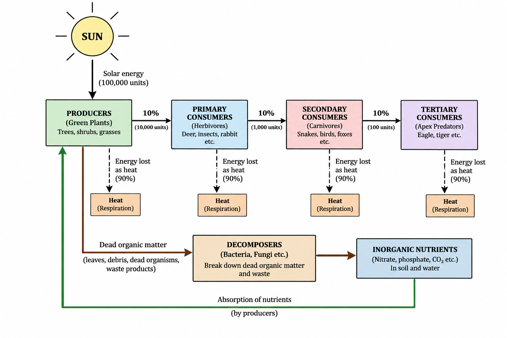
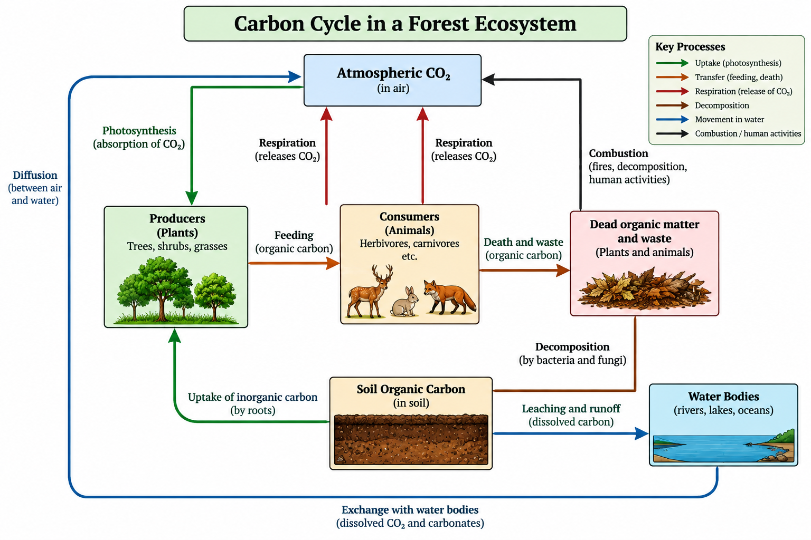
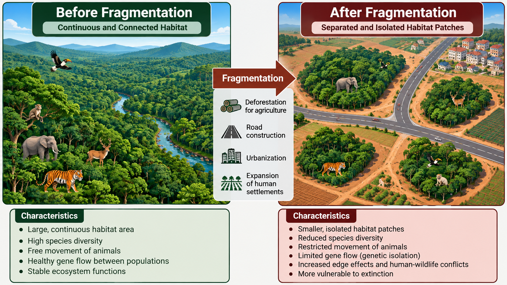
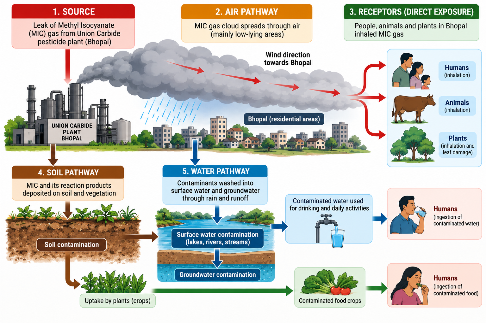

What this assignment covers
One compulsory question per unit, each worth 5 marks. Select a unit to jump to its answer.
Ecosystems
Energy flow, biogeochemical cycling, ecological succession, and sustainable engineering design.
Energy flow in an ecosystem
Energy enters a forest ecosystem as sunlight, is captured by producers, and then passes one way through consumers. Only about 10% of the energy is transferred to the next trophic level; the rest is lost as heat through respiration.

Biogeochemical cycling
Biogeochemical cycling is the continuous movement and recycling of essential elements between living organisms and the non-living components of an ecosystem, such as the atmosphere, soil and water. Unlike energy, which flows in one direction and is eventually lost as heat, matter is continuously recycled through an ecosystem.

Carbon cycle in a forest ecosystem
The carbon cycle is an important example of biogeochemical cycling. In a forest ecosystem, carbon moves between the atmosphere, plants, animals, soil and water through several interconnected processes.
- Atmospheric carbon dioxide: Carbon is present in the atmosphere mainly as carbon dioxide (CO₂).
- Photosynthesis: Green plants absorb atmospheric CO₂ and use sunlight to convert it into organic compounds during photosynthesis. This stores carbon in plant biomass.
- Feeding: Herbivores obtain carbon by consuming plants. Carnivores and other consumers acquire carbon by feeding on other organisms. Thus, carbon moves through the food chain.
- Respiration: Plants and animals release CO₂ back into the atmosphere during cellular respiration.
- Death and waste: When plants and animals die or produce waste, their organic matter becomes available for decomposition.
- Decomposition: Bacteria and fungi break down dead organic matter and waste. Carbon is transferred to the soil as organic carbon, while some carbon is released back into the atmosphere as CO₂.
- Soil carbon: Carbon can remain stored in soil as organic matter. Some dissolved carbon can also be transported through leaching and runoff into rivers, lakes and other water bodies.
- Exchange with water: Carbon dioxide and other forms of dissolved carbon can move between the atmosphere and water bodies, linking terrestrial and aquatic carbon reservoirs.
- Combustion: Forest fires and human activities such as burning fossil fuels release stored carbon back into the atmosphere as CO₂.
Importance of biogeochemical cycling
Biogeochemical cycles maintain the availability of essential elements required for life and help ecosystems continue functioning. They connect producers, consumers, decomposers and the physical environment. Understanding these natural cycles also helps engineers design processes that minimize waste, recover materials and reduce environmental impacts.
Key principle: Energy flows through an ecosystem, while matter is recycled within the ecosystem.
Ecological succession
Ecological succession is the gradual and natural change in the composition and structure of an ecological community over time. As environmental conditions change, one group of organisms is gradually replaced by another, eventually forming a relatively stable and mature ecosystem.
In a forest ecosystem, succession generally progresses through several stages:
- Pioneer stage: Hardy organisms such as lichens, mosses and small plants colonize a bare or disturbed area. They help initiate soil formation and improve the conditions for other organisms.
- Grasses and herbs: As soil and organic matter develop, grasses and herbs become established. They help stabilize the soil and add further organic material.
- Shrub stage: Shrubs develop as soil depth, nutrients and moisture increase. They provide additional habitat and shade.
- Young forest: Larger plants and fast-growing trees become established, creating a developing forest canopy and supporting a greater variety of organisms.
- Mature ecosystem: A relatively stable and complex community develops with multiple vegetation layers, established food webs and greater biodiversity.
There are two major types of succession:
Primary succession
Begins on surfaces where soil is absent, such as newly exposed rock.
Secondary succession
Occurs where a previous community has been disturbed but soil remains, such as after a forest fire or abandonment of agricultural land. It is generally faster because soil, nutrients and some organisms may already be present.
The schematic above also shows an important ecosystem principle: energy flows in one direction, from the Sun to producers and then through different consumer levels. Energy decreases at each trophic level, with much of it released as heat. In contrast, nutrients are recycled through decomposers and returned to the soil, where they can again be absorbed by producers.
Aligning engineering design with ecosystem functions
Ecosystems can provide useful principles for designing sustainable industrial products. Engineers can treat environmental limitations such as energy use, material availability, waste generation and pollution as important design constraints rather than considering them only after production.
| Ecosystem function | Engineering design approach | Sustainable outcome |
|---|---|---|
| Efficient use of energy and resources | Minimize material and energy requirements during production and use | Lower resource consumption |
| Nutrient and material cycling | Design products for reuse, repair, recycling and recovery | Less waste and reduced raw-material demand |
| No waste in natural systems | Convert industrial by-products into useful inputs for other processes | Reduced industrial waste |
| Dependence on renewable energy | Use renewable energy and energy-efficient technologies | Lower dependence on finite resources |
| Adaptation and resilience | Design durable, modular and upgradeable products | Longer product life and less replacement waste |
For example, electronic products can be designed for easy disassembly, allowing valuable components and materials to be recovered during e-waste recycling. Similarly, packaging can use recyclable or biodegradable materials, while Life Cycle Assessment (LCA) can be used to compare the environmental impacts of different product designs from raw-material extraction through manufacturing, use and disposal.
Thus, sustainable engineering aims to make industrial products more resource-efficient, durable, repairable, recyclable and compatible with natural material cycles. By aligning engineering constraints with ecosystem functions, industries can reduce environmental impacts while maintaining useful products and services for present and future generations.
Natural Resources
Energy sources, the cost of overexploitation, and what individuals can do about it.
Renewable vs non-renewable energy
Renewable
Solar, wind, hydropower, biomass, geothermal.
Non-renewable
Coal, petroleum, natural gas, nuclear fuel (uranium).
| Parameter | Renewable | Non-renewable |
|---|---|---|
| Availability | Practically inexhaustible; depends on location and weather | Finite reserves that are being depleted |
| Replenishment | Natural and continuous | Takes millions of years |
| Environmental impact | Low emissions in operation; land, habitat and material use for setup | High CO₂, SO₂ and particulates; mining and spill damage |
| Examples | Solar PV, wind turbines, small hydro | Coal power plants, petrol and diesel engines |
| Industrial relevance | Needs storage and grid upgrades; cost falling; supports low-carbon manufacturing | Reliable, dense energy and existing infrastructure; carbon and price risk |
Modern industry still relies heavily on fossil fuels because of reliability and infrastructure. A long-term sustainable mix shifts towards renewables, with efficiency gains and storage.
Long-term ecological effects of overexploitation
Land
- Soil degradation and loss of fertility
- Erosion and desertification
- Deforestation and habitat destruction
- Reduced carbon storage, altered local climate
Water
- Groundwater depletion and falling water tables
- Water pollution and salinity
- Reduced availability for people and industry
- Stress on rivers, wetlands and aquatic life
Three individual conservation strategies
Each supports equitable use: what one person saves stays available for others and for future generations.
Save water and harvest rain
Fix leaks, use water-efficient fixtures, reuse greywater, install rooftop rainwater harvesting.
Why it helps: recharges groundwater and lowers demand on shared supplies.
Cut energy use and switch to renewables
Use LED lighting and efficient appliances, use public transport, add rooftop solar where possible.
Why it helps: reduces fossil fuel demand and emissions.
Reduce, reuse, recycle and buy responsibly
Avoid single-use items, compost food waste, repair and recycle electronics, prefer local and certified products.
Why it helps: lowers pressure on land and raw materials.
Biodiversity
India's biogeographic regions, hotspots, the values of biodiversity and the threat of fragmentation.
Biogeographical classification of India
India is commonly divided into ten biogeographic zones (Rodgers and Panwar, Wildlife Institute of India). They are shown as labelled regions rather than a map, to avoid an inaccurate drawing.
Trans-Himalaya
Cold, arid Ladakh and Lahaul-Spiti; snow leopard, ibex.
Himalaya
Forests and alpine zones from foothills to snowline.
Desert
Thar and Kutch; hardy, drought-adapted species.
Semi-arid
Grasslands and scrub between desert and plains.
Western Ghats
Wet evergreen forests; very high endemism.
Deccan Peninsula
Largest zone; dry and moist deciduous forests.
Gangetic Plain
Fertile alluvial plains and riverine ecosystems.
Coasts
Mangroves, estuaries, beaches and lagoons.
North-East
Hills and rainforests linking India to Southeast Asia.
Islands
Andaman, Nicobar and Lakshadweep.
Major biodiversity hotspots in India
A hotspot has high endemism (at least 1,500 endemic plant species) and has lost at least 70% of its original habitat (Myers et al.).
Himalaya
Northern and north-eastern Himalayan range. Rich in endemic plants and medicinal species.
Indo-Burma
India's north-east and beyond. Many endemic freshwater turtles and primates.
Western Ghats and Sri Lanka
Along India's west coast. Lion-tailed macaque, many amphibians.
Sundaland
Includes the Nicobar Islands within India.
Values of biodiversity
Consumptive
Direct use for subsistence: food, fuelwood, fodder, fish.
Local: villagers gather firewood and fish.
National: forests and fisheries feed millions.
Productive
Harvested and sold commercially: timber, medicines, silk, spices.
Local: tendu leaf and honey trade.
National: Ayurvedic and pharma industries, tea, spices.
Social
Cultural and religious importance.
Local: sacred groves, tulsi, peepal.
National: national animal and bird, festivals.
Ethical
Every species has a right to exist, regardless of use.
Local: community protection of wildlife.
National: Constitution's Article 51A(g) duty to protect wildlife.
Habitat fragmentation
Fragmentation breaks a large continuous habitat into small, isolated patches, typically through roads, farms, dams and cities.

How fragmentation threatens diversity
- Smaller, isolated populations.
- Reduced gene flow and more inbreeding.
- Genetic diversity falls, so populations adapt less well to disease and change.
- Species diversity falls through local extinctions, edge effects and loss of wide-ranging species.
Example: elephant and tiger corridors are cut by highways and railways, isolating populations. Wildlife corridors and overpasses help reconnect them.
Pollution
A documented case study, its causes, and an integrated solid waste and pollution control plan.
Bhopal gas tragedy, India (1984)
On the night of 2–3 December 1984, methyl isocyanate (MIC) gas leaked from a storage tank at the Union Carbide India Limited pesticide plant in Bhopal. Water entering the tank triggered a runaway reaction, and a toxic cloud spread over densely populated neighbourhoods. It remains one of the world's worst industrial disasters; estimates of deaths and injuries vary by source, but run to thousands killed and hundreds of thousands affected.
Root causes and contributing factors
Root causes
- Large MIC stockpile in a plant near a populated area
- Water entered the MIC tank, causing an exothermic runaway reaction
- Safety systems (refrigeration, vent gas scrubber, flare tower) were not working or inadequate
Contributing factors
- Poor maintenance and reduced staffing and training
- Weak emergency planning and no public warning
- Lack of land-use zoning and regulatory oversight
- Unmanaged hazardous waste stored on site
Case-study timeline
- Event: water contaminates the MIC tank during routine operations.
- Cause: failed safeguards let the reaction run away.
- Release: toxic MIC gas vents to the atmosphere.
- Environmental damage: air contaminated; later, soil and groundwater around the site polluted by abandoned chemical waste.
- Human and ecological impact: deaths, respiratory and eye injuries, long-term health and livestock harm.
- Control response: evacuation, medical relief, legal action and site clean-up efforts.
- Long-term prevention: stricter hazardous-chemical rules, emergency planning and community right-to-know.
Pollution pathways
Source (MIC tank, plant waste) → air, soil and water (gas cloud; leaching to groundwater) → exposure (inhalation, contaminated drinking water) → impact (illness, ecosystem harm).

Integrated solid waste management and pollution control plan
Prevent
Safer chemistry (avoid or minimise hazardous intermediates), small inventories, inherently safer design, zoning buffers.
Detect
Gas sensors, IoT leak monitoring, real-time alarms and Process Hazard Analysis.
Contain
Double-walled tanks, working scrubbers, flare towers, water-curtain and emergency shutdown systems.
Collect and manage
Waste segregation, labelled hazardous waste storage, manifest tracking, reduce-reuse-recycle hierarchy.
Treat
Secure engineered landfill, high-temperature incineration, effluent treatment plants, bioremediation and phytoremediation for contaminated soil and groundwater.
Monitor
Regular groundwater and air testing, audits, public disclosure, emergency drills and community warning systems.
Applicable Indian rules include the Hazardous and Other Wastes Rules 2016, Solid Waste Management Rules 2016 and the Environment (Protection) Act 1986. Preventing similar disasters needs design safety, strict enforcement, trained staff and informed communities.
Why this plan fits the case
The Bhopal failure was both acute (a gas release) and chronic (waste left in the ground). The plan therefore pairs process safety (prevent, detect, contain) with waste management (collect, treat, monitor).
Sustainability connects all four units
Healthy ecosystems supply the resources industry depends on. Conserving those resources and protecting biodiversity keeps ecosystems resilient, while preventing pollution avoids damage that is costly or impossible to reverse. Sustainable engineering ties these together by designing products and processes that work with natural cycles rather than against them.
Sources
- Odum, E. P. and Barrett, G. W. Fundamentals of Ecology. Cengage Learning.
- Bharucha, E. Textbook of Environmental Studies for Undergraduate Courses. Universities Press (prepared for UGC).
- Rodgers, W. A. and Panwar, H. S. (1988). Planning a Wildlife Protected Area Network in India. Wildlife Institute of India.
- Myers, N. et al. (2000). Biodiversity hotspots for conservation priorities. Nature, 403, 853-858.
- Broughton, E. (2005). The Bhopal disaster and its aftermath: a review. Environmental Health, 4:6.
- Ministry of Environment, Forest and Climate Change, Government of India: Solid Waste Management Rules 2016; Hazardous and Other Wastes (Management and Transboundary Movement) Rules 2016.
- Constitution of India, Article 51A(g).